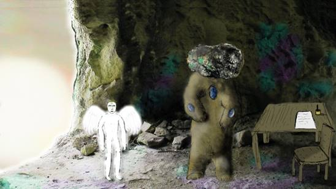
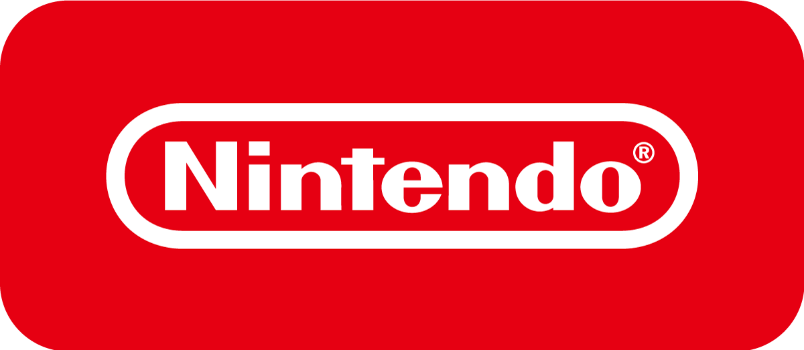

"SENSE OF WONDER NIGHT 2020 (SOWN2020)", which selects the most outstanding works from the 80 indie game developers "Selection Exhibits". The eight finalists have finally been decided. This year, two works from Japan and one work each from Canada, Indonesia, Peru, Poland, Switzerland, and the United Kingdom were selected, making it an international feature. Each finalist will give a presentation at "SENSE OF WONDER NIGHT 2020 (SOWN2020)" which will be held from 17:00 to 19:00 on September 25 (Friday). The selection committee will judge it and decide each award such as "Grand Audience Award" and "Best Game Design Award". The SOWN2020 will be live broadcasting through online, so check it out!
Barnaque（Canada）
「Infini」

Involuntarily Drawn in with a Mysterious Character Design
This work, called Psychedelic Puzzle AVG, impressed the selection committee members with a world view, strange characters, and sounds that were difficult to understand. "This work had the most impact on the graphics and sound, which is exactly the sense of wonder. I definitely wanted to ask why I wanted to make such a game." (Selection Committee Member : Shuhei YOSHIDA)
"Crab Battle Action" where the movement of joints is too real
Although it is a simple fighting game in which you control crustaceans and turn over your opponent to win, the movements of the crabs are so real that you have never seen them. "I think it's quite difficult to reproduce the movement of the crab joints. I think it's an interesting game that makes you feel that you are using new technology well." (Selection Committee Member, Isao KITAYAMA)
Making a yacht, not only attacking and defending in the fight against the enemy, but also the damaged part will sink unless it is repaired during the battle, which is quite hard content. Since it supports multiplayer, you can double the fun by joining forces with your friends. "It seems to be very fun to play with friends in multiplayer while using your head. I want to play early." (Selection Committee Member: Takeshi TAKAHASHI)
Who is lying? People gathered in a certain space will roast the AI that is mixed in with them. If you play the role of A.I., how do you cheat? A multiplayer brain battle is unfolded in 3D space. "There are many'human wolf'type games made, but I felt that it was new to be able to play with a large number of people in 3D space." (Selection Committee Member: Nobushige KOBAYASHI).
A Puzzle Adventure Game With Full of Mysterious Visuals and World View
It features a unique atmosphere that incorporates Peruvian myths and legends. The mysterious and fresh view of the world was highly evaluated by the selection committee. "The fact that the new media expression of games is based on the myths of our own country is very refreshing to us. It's a work that inspires us in many ways," (Selection Committee Member: Kiyoshi SHIN)
A Novel Puzzle & AVG That Opens The Way By Manipulating Electricity
A simple and profound work that manipulates a robot that sends an electric current to something it touches, jumping, moving, and performing gimmick operations. "This game can be made with conventional technology, but the point of view is that "The object you are touching is energized and moves." I think it's a beautiful example of creating an interesting game based on a simple idea." (Selection Committee Member: Isao KITAYAMA)
Space Exploration Game Where You Can Make A Drone And Learn Programming
Not only can you create and operate your own drone, but you can also enjoy programming to move the drone automatically. "It's very educational and good that it is also made as a tool to learn simple programming." says Nobushige Kobayashi. "Make an elaborate drone, program it, and show off to your friends. It seems that you can enjoy it like that." (Selection Committee Member: Isao KITAYAMA)
Somehow Nostalgic, Original Indonesian Landscape Drawn With Pixel Art
While drawing the scenery of Indonesia, it makes the Japanese feel nostalgia. A side-scrolling adventure game with beautiful pixel art. "I think the graphics are just beautiful, and the story reminds us of the good old days for us Japanese. I really like that part." (Selection Committee Member: Kazunori KOMAGATA)
With the support of SONY Interactive Entertainment (SIE) and Nintendo, 80 indie game developers are exhibiting as ""Selected Exhibits"" again this year. From the 80 works, the SOWN selection committee selects 8 works (SOWN2020 finalists) that match the purpose of ""SENSE OF WONDER NIGHT (SOWN)"" and will be online on September 18 (Friday) at TOKYO GAME SHOW 2020 ONLINE. Organizer will announce. SOWN2020 finalists will be invited to present their works at a recital held at 17:00 on September 25th (Friday), and the outstanding works will be awarded with the ""Grand Audience Award"" and other awards.

"SENSE OF WONDER NIGHT 2020 (SOWN2020)" streaming schedule
Date and Time: Friday, September 25, 2020 17:00-19:00 (planned) Participation Fee: FREE
Online party “Indie Night Party” for intimate friendship between indie game developers, finalists of SENSE OF WONDER NIGHT (SOWN), SOWN judges and sponsors from September 30 (Fri) 19:30.
Date and Time
Friday, September 25, 2020 19:30 - (scheduled to end at 21:30)
Qualification for Participation
TGS Business Matching System (online business meeting system) registrant
*If you are not registered as an exhibitor, you can register for free. Please contact with TGS2020 ONLINE exhibitor. *General business participants can register for the TGS Business Matching System with fee-charged. Click the button below to proceed to the registration page.
How to Participate
TGS Management Office will send an invitation through TGS Business Matching System registrants by e-mail prior to the session.
For more information, please see the Indie Night Party page.
"SENSE OF WONDER NIGHT 2020 (SOWN2020)" is "Sense of Wonder" when everyone sees the concept of the world at the moment they see it or hear the concept. This year's event will be the 13th time as a project to discover game ideas that will cause game developers and provide game developers with opportunities for presentations and exhibitions at the TOKYO GAME SHOW venue.
In 2019, SOWN was selected from 86 groups/individuals who were selected as exhibitors for the Indie Game Area. As a result, 8 finalists from 4 countries and regions gave presentations. By country, there were 4 works from Japan, 2 from the United State, and 1 from China and 1 from Poland. About 400 people came to the venue. Participants responded with a smile hammer to original games and unique presentations, showing an interactive excitement.
Finally, the "Grand Audience Award", "Best Technological Game Award", "Best Arts Award", "Best Experimental Game Award", "Best Game Design Award", and "Best Presentation Award" were awarded and the event was a great success. After the event, we enjoyed interacting at <International Party + Indie Night>.
To enter the SOWN, you must first apply for the indie "Selected Exhibits" (free). Screening will be conducted by the selection committee members, and successful applicants will be entitled to participate in the "Selected Exhibits" (free). Again, the selection committee will select the finalists who can enter SOWN from the successful applicants.
"SENSE OF WONDER NIGHT 2020" presentation overview
Event Date and Time
Scheduled for Friday, September 25, 2020 (17:00 to 19:00)
Venue
Holding at Tokyo and scheduled to be broadcasted through online
Prize Money
Grand Audience Award US$3,000 Awards (Best Game Design Award, etc.) US$500
Presentation on the day and notes
・Presenters are required to participate in Indie "Selected Exhibits".
・The speakers will be provided with about 10 minutes of presentation time. Please give a demonstration or presentation of the game within the time limit. (Simultaneous interpretation is available between Japanese and English)
・SOWN finalists from overseas and in remote areas will participate by presenting through online or by presenting pre-recorded presentation videos.
・The presentation will be streamed via video, and the details of the application (game outline) will be published on TGS2020 ONLINE.
Objectives of SOWN
● Introduce experimental, creative games that include game design and ideas
● Introduce the importance of “Sense of Wonder” in games and stimulate the game industry
● Providing opportunities for the future to those who are developing experimental games
● Creating new areas in game design
Expected to be announced are prototype demos, games that have been released or will be released with experimental elements, games developed by students who think of strange things. There is no distinction between professional and amateur. TGS2020 ONLINE also welcome applications for games from small venture companies and coterie games that you are developing by yourself. If you wish to announce a game that can cause "SENSE OF WONDER", please check the entry method and apply.
IMPORTANT
"SENSE OF WONDER NIGHT" has received a lot of inspiration from the "Experimental Gameplay Workshop" that launched in 2001 at the Game Developers Conference (GDC). TGS Management Office and SOWN staff would like to thank the many people and friends who have made this workshop a success.
SOWN is looking for game entries that meet any of the following 5 criterias!
● Introduce games that are experimental, creative, and include game design and ideas.
Games shaping new game experiences never before
A game that provides a new kind of experience by successfully applying technologies that have not been used until now, such as natural language processing, physical calculation, image recognition, gesture control, to games.
Games that shakes the common sense of games
A game that seeks a new way of expressing the game itself that makes the world look a little different after playing through the game experience
Games with emergent elements
A game in which the game involves the user's activity itself by having elements such as AI interactions, tool-like elements, and sociality.
Games that many people are impressed with wanting to play right now
A game in which everyone wants to experience a new experience and wants to keep it at hand for that purpose
Games don't understand why, but it's amazing
Anyway, at the moment you watch it, you will be impressed with "This is amazing..." game.
Games NOT covered by SOWN
Mainly elements that are NOT necessarily related to the game itself
A game in which only the elements comprising the game are the key factor
When one of the elements that make up the game, such as background settings and situations, character design, graphics, stories, and audio, that has never existed is the center of surprise.
New genres created by existing genres or simply mixing them
However, unless you're still creating a truly new gaming experience.
In case the new reason is that you're targeting only a specific audience
Games for women only and games for the elderly. However, unless it is one that many people are impressed with
Pure technological innovation, experimental business model, distribution mechanism that does not affect gameplay
It does not completely eliminate them, but it must be clear that they directly and clearly transform the gaming experience.
Selection Committee Members
Selection will be taking place by the following "SENSE OF WONDER NIGHT" selection committee members.
Kiyoshi SHIN
Game Journalist
As the representative director of Thirdverse Co., Ltd., Mr.SHIN developed the VR sword fighting game "Sword of Garganture". Digital Hollywood University Associate Professor. Director of Tokyo XR Startups. His book "The Impact of VR Business "Virtual World" Creates Huge Money" (NHK Publishing).
Juan Gril
Founder, Gametapas
Juan has designed and produced a successful mass market game for 20 years. Currently the founder of Gametapas. Previously, he was the founder of the successful casual game studio Joju Games. Working with both major media companies and game publishers for over 12 years developing over 50 games for PC, console and mobile platforms. Yahoo! He started his career in the late 90's when he was one of the former members of Games.
Nobushige KOBAYASHI
Tohoku Gakuin University
International Game Developers Association (IGDA) Japan Dojin & Indie Game Subcommittee (SIG-INDIE). A company that solves the problems and solutions of the relationship between Japanese game voluntary production and the game industry.Doctorate from Tokyo Institute of Technology, according to a paper "Independent Production Culture as Key to Growth of the Game Industry" (full text is available online) that analyzes the issues and solutions of the relationship between Japanese independent game production and the game industry through social science. Academic) acquisition. In June 2020, published the book "Introduction to Digital Game Research" (Minerva Shobo). Specializes in media studies and cultural sociology.
Isao KITAYAMA
Kanagawa Electronics Research Laboratory [Doujin Circle] Circle representative, Game Planning, Programming
KITAYAMA has launched Kanagawa Electronics Research Laboratory in 2002. Since presenting "I am the God of the Forest World" at SOWN in 2010, he has been a member of the SOWN selection committee since 2012. There are more than 20 works including "QUALIA", "Watashi Hajikan Wotomer" and "AGARTHA". Even now, he is creating games that apply technologies such as artificial life, gun intelligence, and cellular automata.
Ramon Nafria
Videogame Ninja: Trusiga
In 1992, Naeval realized at the age of 12 when he started playing the game that it was the best medium to express himself. Since 1999, he has contributed to Spanish media such as Onez, Ociojoven, Anaitgames, Eurogamer, Videoshock and Vandal and produced games such as Nerlaska, Gameloft, Digital Legends, Abylight, U Play, Blit Software and A Crowd of Monsters since 2003. I've been Besides giving lectures on games at multiple universities, he is also active as a member of the Game Development Association.
Takeshi TAKAHASHI
NPO Ofufes
TAKAHASHI has joined Koei Co., Ltd. in 1998. Engaged in "Shin Sangoku Musou 1-4". In 2008, transferred to Creatures Co., Ltd. and worked as a director of "Pokepark". In 2013, we acquired Oculus Rift DK1 with a kick starter and started the VR software development and VR software presentation OfuFes (now Japan VR Fest). In 2014, became independent as a VR specialist. In the same year, OcuFes became an NPO corporation. Since then, he has been actively working for the spread of VR in Japan and VR developers in the world.
Kazunori KOMAGATA
Executive Officer / General Manager of Sales Planning Department, TSUKUMO
As a hobby who likes games and entertainment, KOMAGATA is planning to exhibit for games and the entertainment industry, and developing products using IP products such as Hatsune Miku. At "Tukumo Virtual Shopping", which is being broadcast on YouTube, she has become a beautiful girl and is also active as a virtual salesperson. My favorite game genre is a 2D pixel art action game. His hobbies are games and watching recommended VTuber videos.
Shuhei YOSHIDA
Representative, Indie Initiative
SONY Interactive Entertainment
Yoshida joined Sony Corporation in 1986 and participated in the current SIE in February 1993. Since then, he has produced a number of software titles released for the "PlayStation" platform, and since 2008 he has been appointed to SIE Worldwide Studio President, the game production division. In charge of production of "God of War" and "Uncharted" series. In November 2019, he was appointed as the representative of the indie initiative that promotes indie games. He is also the key man who developed the PlayStation®RVR virtual reality system released in October 2016.